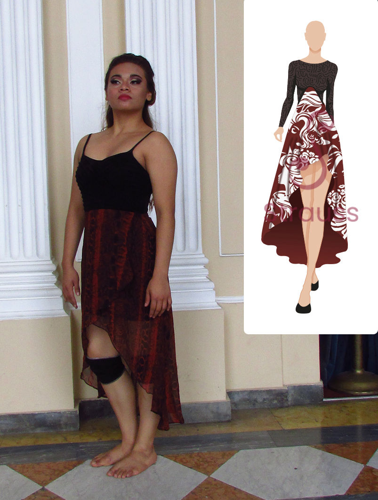

Carmen Apasionada
Interpretada por Mercedes Benavides

Carmen
Sufrida
Interpretada por Mercedes Benavides
Este proyecto fue creado con el propósito de apoyar actividades culturales dentro del país de El Salvador, fue coordinado por la Alianza Francesa (ubicada en San Salvador) y la Secretaría de Cultura a través del Departamento de Danza Contemporánea de la Escuela “Morena Celarié”.
Consistió en adaptar la obra francesa “Carmen” de Prosper Mérimée a la realidad salvadoreña y para su elaboración se hizo participe a diversas universidades e institutos nacionales.
Finalmente, el espectáculo de danza contemporánea “Carmen… una y otra vez” tuvo su estreno mundial en el Teatro Nacional con música en vivo del conjunto de Jazz del Centro Nacional de Artes (CENAR) interpretada por artistas de baile de la Escuela “Morena Celarié”.
Mandato y proceso
Por parte de nuestra universidad más de 50 estudiantes fueron comisionados con la elaboración de propuestas de vestuario para la obra. Un taller fue realizado en las instalaciones de la escuela “Morena Celarié” adonde se presentó la coreografía del baile a los estudiantes; también se entrevistó a los bailarines para conocer sus necesidades y discutir su visión del personaje a interpretar.
Interpretado por Eduardo Castillo
Interpretado por Rene Góchez
Interpretada por Mercedes Benavides
Interpretada por Mercedes Benavides

Carta de agradecimiento de la escuela "Morena Celarié".
No todos los días se tiene la oportunidad de poder ser parte de un equipo multidisciplinario y de un proyecto enfocado a la mejora cultural del país eso por eso que me encuentro grandemente agradecida con mi profesora Rhina Chavez por incluirnos en esta actividad, con ella desarrollamos trabajos en ramas muy diversas del diseño y aprendimos mucho en cada una de ellas.
De igual manera, sin la colaboración de la escuela nacional de danza “Morena Celarié” no se hubiera podido llevar a cabo el proceso de diseño de la manera correcta, por lo tanto, muchas gracias a los bailarines y directores que compartieron con nosotros su pasión y visión para con este proyecto.
Develop your own site - Get now